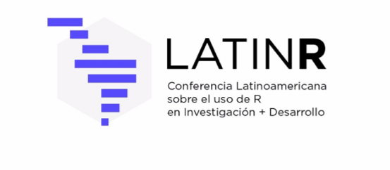

LatinR - Conferencia Latinoamericana sobre Uso de R en Investigación + Desarrollo

PROGRAMA PRELIMINAR
3 de Septiembre 2018: Tutoriales
10:00 - 13:00 hs
Tutorial 1*. Visualización estática e interactiva de datos usando ggplot2 y plotly por Natalia da Silva (en español, nivel básico)
Cupo: 50 asistentes
Natalia da Silva (PhD, Iowa State University) es Profesora Asistente en el Departamento de Estadística de la Universidad de la República en Montevideo (UDELAR-IESTA). Trabaja en investigación en métodos de aprendizaje supervisado, predicción, análisis de datos exploratorios y gráficos estadísticos en colaboración con Di Cook y Heike Hofmann. Es cofundadora de R-Ladies Ames y R-Ladies Montevideo y Chair de LatinR2018.
Resumen: La visualization tiene un rol fundamental en todas las etapas del análisis estadístico de datos, exploración, modelado y diagnóstico. Permite descubrir patrones escondidos en los datos así como dar luz a modelos o algoritmos complejos.
En este taller vamos a recorrer los conceptos básicos para hacer visualización estática de datos con R usando el paquete ggplot2. Veremos las ideas fundamentales de la gramática gráfica que está detrás de ggplot2. Los participantes aprenderán a crear distintos tipos de gráficos en pocos pasos de calidad publicable.
A su vez Introduciremos el concepto de gráficos interactivos y su potencial para el descubrimiento de patrones y el análisis estadístico de datos. Existen diversas opciones para hacer visualización interactiva en R pero en este taller usaremos plotly.
Tutorial 2*. Inteligencia Artificial con R: Introducción al “Deep Learning” por Andrés Farall (en español, nivel básico/intermedio)
Cupo: 50 asistentes
Andrés Farall (PhD, Universidad de Buenos Aires) es especialista en temas relacionados a la Ciencia de Datos. Actualmente es el Responsable del Área Metodológica de Ecoclimasol y Profesor de Postgrado en la Facultad de Cs. Exactas y Naturales (UBA).
Resumen: El taller mostrará herramientas de “Deep Learning” aplicadas a problemas de Regresión, Clasificación y “Novelty Detection”. Se utilizará la interfaz KERAS basada en TensorFlow, tecnología de código abierto creada por Google para el desarrollo del aprendizaje automático. Se enseñarán a lo largo del taller los conceptos fundamentales de los métodos tratados, y se darán ejemplos de caso mediante el uso del entorno de desarrollo integrado Rstudio.
14:00 - 18:00 hs
Tutorial 3. How to repeat yourself with purrr por Jennifer Bryan (en inglés, nivel intermedio, se usará tidyverse)
Cupo: 50 asistentes
Jennifer Bryan (PhD, UC Berkeley) es Ingeniera de Software en RStudio y Profesora Asociada de la University of British Columbia. Es una referente internacionalmente reconocida de la comunidad R dentro de la cual es integrante ordinaria de la R Foundation y parte del Comité de Liderazgo de rOpenSci.
Resumen: Iterative tasks come up often in data analysis: do X for every Z, where Z could be "column", "row", "treatment group", etc. In base R, the nicest way to attack these tasks is with the "apply" functions. The "apply" functions are very powerful, but also have some downsides: they do not present a consistent interface and they often return data in an awkward form. The tidyverse is an opinionated collection of R packages designed for data science and the purrr package, specifically, is extremely useful for doing repetitive tasks. purrr's "map" functions have an extremely consistent interface and return data in a form that is ready for the next step in your analysis.
This tutorial includes:
● Brief orientation to the tidyverse.
● Brief review of how write a basic function. If you've never written a function before, see the three parts of this to prepare.
● In-depth coverage, both conceptual and hands-on, of the purrr package.
● Case studies, such as how to do work on each row in a data frame or how to turn data in a nested list (e.g. from JSON or XML) into a nice rectangle.
IMPORTANTE: Los tutoriales 1 y 3 requieren traer una notebook con la batería cargada y con la última versión de R y RStudio (al 1 de Junio de 2018) instalada. También necesitará tener instalado el paquete tidyverse y plotly**.
* Los tutoriales 1 y 2 se superponen. Sólo se puede asistir a uno de ellos.
** Sólo para el tutorial 1.
4 de Septiembre 2018: Presentaciones Orales + Posters + Keynote
9:00 - 18:00 hs - Pósters (PB)
9:00 - 18:00 hs - Presentaciones Orales (Auditorio)
18:00 - 19:00 hs - Conferencia Plenaria por Jennifer Bryan (Auditorio)
Jennifer Bryan (PhD, UC Berkeley) es Ingeniera de Software en RStudio y Profesora Asociada de la University of British Columbia. Es una referente internacionalmente reconocida de la comunidad R dentro de la cual es integrante ordinaria de la R Foundation y parte del Comité de Liderazgo de rOpenSci.
Resumen: My talk deals with two related themes: the ongoing discussion of "data science vs. statistics" and the importance of developing your own data analysis workflow. These topics are related in my mind because I believe, as academic statisticians, we often take an unnecessarily narrow view of our discipline. The "data science vs statistics" debate brings this to a head, because the desire to join and even lead data science initiatives provides an incentive to broaden our mandate. What if we embraced the development and teaching of tools -- both mental and digital -- that address the entire data analysis process? I'll draw on my experience developing and delivering STAT 545 at the University of British Columbia. I conclude with an overview of semi-recent developments in the R ecosystem, aimed at people who want to make their workflow more productive and less aggravating. I'll explain what the tidyverse is and why so many people are incorporating new tools, like Git and GitHub, into their workflow.
5 de Septiembre 2018: Presentaciones Orales + Keynote
9:00 - 18:00 hs - Presentaciones Orales (Auditorio y Aula)
18:00 - 19:00 hs - Conferencia Plenaria por Walter Sosa Escudero (Auditorio)
Walter Sosa Escudero (PhD, University of Illinois) se especializa en estadística y econometría teórica y aplicada a cuestiones sociales. Sus trabajos de investigación se encuentran en revistas como Journal of Econometrics y Econometric Theory of Journal of Multivariate Analysis. Mantiene una activa agenda de divulgación científica sobre el rol de la estadística y los datos en la sociedad. Es autor de Qué es (y qué no es) la Estadística (Colección Ciencia que Ladra, Siglo XXI) y escribe regularmente para los principales diarios argentinos. Es director del departamento de economía de la Universidad de San Andrés, investigador principal del CONICET y miembro de número de la Academia Nacional de Ciencias Económicas.
Resumen: La revolución de datos y algoritmos ofrece una excelente oportunidad para renovar la forma en la que se motiva y enseña la estadística. Lejos de funcionar como una mera ilustración de los métodos formales, la charla sugiere que entornos computacionales flexibles como R pueden cumplir un rol fundamental en explicar el funcionamiento de ideas complejas en el campo del análisis moderno de datos.
____________
Charlas y pósters contribuidas por nuestros patrocinadores:
Las charlas cortas incluirán presentaciones contribuidas por los autores y cuidadosamente seleccionadas por nuestro comité científico. También habrá presentaciones invitadas y de patrocinadores.
Los temas de las charlas contribuidas y los pósters incluyen el uso transversal de R en:
● Estadística
● Ciencias sociales
● Ciencias biológicas
● Ciencias de la salud
● Economía, entre otras
Las presentaciones abarcan temas como:
● Paquetes nuevos
● Enseñanza con R
● Análisis innovador de datos públicos
● Desarrollo de visualizaciones interactivas
● Diversas aplicaciones de R, entre otras
También habrá paneles dedicados al fuerte concepto de Comunidad dentro del mundo de la programación con R. Además de The Carpentries y rOpenSci, estarán representados distintos grupos de usuarios de distintos países de América Latina y del resto del mundo.
Charlas contribuidas por nuestros patrocinadores:
Productividad en R con RStudio
Javier Luraschi, Ingeniero de Software en RStudio
Resumen: Los creadores de R proporcionaron una plataforma para procesar informática estadística de forma libre y abierta, la cual ha habilitado colaboración y ha extendido sus beneficios con todo mundo; porque, es mejor para todos si las herramientas que usamos en la investigación científica son gratuitas y abiertas. Hacer que el software científico sea libre tiene muchos beneficios: es reproducible, promueve mayor intercambio de conocimientos y técnicas, y elimina las barreras de costos para que todos puedan participar.
RStudio tiene la misión de proporcionar el mejor software profesional de código abierto con soporte empresarial para aplicaciones informáticas y estadísticas usando R. El principal producto de RStudio es un ambiente de desarrollo integrado (IDE) que le facilita, a cualquier persona, el análisis estadístico de información con R. RStudio también ha desarrollado varios paquetes para R, como Shiny y R Markdown, los cuales proporcionan una plataforma para compartir aplicaciones interactivas y reportes reproducibles.
Esta sesión presentará las herramientas y paquetes desarrollados por RStudio.
Impresión 3D por medio de R
Lucas Pogorelsky, Coordinador de la Escuela de Ciencia de Datos, Escuela Argentina de Nuevas Tecnologías (EANT)
Resumen: Esta charla tiene como objetivo presentar cómo utilizar R para generar una representación de datos en 3 dimensiones y generar el archivo necesario para impresión 3D y de este modo generar un gráfico “físico”.
Utilizaremos datos de los subtes de Buenos Aires provenientes del portal de Datos Abierto de la Ciudad de Buenos Aires y nos valdremos de las librerías tidyverse para manipulación de datos estructurados, sf para la manipulación de datos georreferenciales y r2stl para la generación del archivo stl necesario para la impresión en 3D.
En la charla se podrá ver el mapa de la Ciudad de Buenos Aires con la cantidad de pasajeros que se suben en cada estación de subtes impreso en 3 dimensiones.
Las 50 primeras personas en inscribirse hasta el 9 de Julio de 2018 a alguno de los aspectos de LatinR2018 (tutoriales y/o simposio) recibirán acceso a un mes gratuito al contenido completo de los más de 100 cursos de DataCamp.com (esta suscripción es equivalente a 25 dólares estadounidenses).
Información sobre aranceles: http://latin-r.com/blog/aranceles
Para inscribirse: http://latin-r.com/registro
____________
LatinR <- Conferencia Latinoamericana sobre Uso de R en Investigación + Desarrollo
SADIO organiza este evento que reúne a la comunidad latinoamericana en general y a la argentina en particular, y propone un abordaje interdisciplinario a las problemáticas y prácticas socio-técnicas que emergen del rápido avance de las tecnologías de la información y la comunicación en la sociedad. LatinR es un simposio dentro de las 47 JAIIO que se desarrollará entre el 4 y el 5 de septiembre de 2018.
Convocamos a investigadores, tecnólogos, desarrolladores, educadores y empresas a enviar trabajos relativos al uso del lenguaje de programación R, abarcando desde instancias de investigación y experimentales hasta aplicaciones, demostraciones de aplicaciones y usos comerciales.
Tópicos de interés:
- Aplicaciones de R en distintas disciplinas de la academia y la industria. Todos los campos del conocimiento y sus combinaciones son de interés (por ejemplo, Ciencia de Datos, Estadística, Informática, Ciencias Biológicas y de la Salud, Bioinformática, Geología, Ciencias de la Atmósfera, Ciencias Sociales, Humanidades, Economía, Finanzas, Negocios, y Periodismo, entre otras)
- Uso de R en conjunto con otros lenguajes de programación
- Uso innovador de paquetes R existentes
- Desarrollo de nuevos paquetes R
- Uso de R en la enseñanza
- Investigación reproducible usando R
- Análisis de grandes datos con R
- Aprendizaje automático con R
- Visualización de datos con R
- Uso de R para análisis de datos abiertos
Fechas importantes:
- Fecha límite para la recepción de trabajos: 13 de abril de 2018* Prorrogado al 30 de abril de 2018
- Notificación aceptación: 22 de junio de 2018
- Recepción de versiones finales e inscripción de autores: 9 de julio de 2018
- Realización de la conferencia: 4 y 5 de septiembre de 2018
* Los primeros trabajos en ser recibidos y que sean aceptados, serán premiados con un mes gratuito de acceso Premium a DataCamp.com.
Envío de trabajos:
Todos los trabajos enviados deberán estar relacionados con los tópicos de interés de LatinR. Se aceptarán los siguientes tipos de trabajos:
Comunicaciones Orales:
Hay tres formatos posibles para las comunicaciones orales:
- Comunicaciones sobre resultados de trabajos de investigación, estados de avance o desarrollos específicos que por su originalidad o potencial aplicación e impacto en el uso o desarrollo de R en la academia o la industria resulten de interés a la comunidad regional de usuarios de R. Si el trabajo no ha sido previamente publicado o presentado en algún otro evento, el envío deberá incluir un resumen extendido, con una extensión máxima de 2 páginas, incluyendo palabras claves, textos y figuras.
- Trabajos ya presentados en un evento internacional (no latinoamericano) o publicado en una revista internacional (no latinoamericana) de relevancia en el área durante los años 2016 a 2018. Esto tiene como objetivo que investigadores activos difundan en el ámbito latinoamericano trabajos previamente difundidos fuera de la región. El envío de estas comunicaciones orales requerirá un resumen incluyendo los datos de la publicación original (evento/revista, fecha, acceso URL o DOI) cuya extensión no exceda 1 página.
- Demostración de una aplicación (demo) donde se podrán presentar resultados de proyectos desarrollados usando R (tales como aplicaciones de Shiny u otras plataformas que incluyan el uso de R). Este formato contará con la posibilidad de obtener retroalimentación de potenciales usuarios, así como de desarrollo de aplicaciones o procesos particularmente innovadores en empresas privadas o por profesionales independientes con el objetivo de intercambiar experiencias adquiridas en la práctica. Son bienvenidos los casos de éxito y también los casos de problemas encontrados con la aplicación de una metodología o tecnología determinada. El envío de comunicaciones orales que incluyan una demo deberá incluir (i) un resumen de no más de 1 página que informe acerca de una aplicación o proceso usando una descripción sintética, sus objetivos, problemas que resuelve, audiencia de usuarios a los que está destinada, y tecnología utilizada y (ii) una URL de una versión de la demo si corresponde, si ésta se puede ejecutar en línea o, alternativamente, una dirección URL con un video breve que muestre las principales características de la misma.
Todas las comunicaciones orales aceptadas tendrán un espacio para su exposición en el programa de LatinR. Los resúmenes de las comunicaciones orales se incluirán en los Anales de LatinR.
Posters:
Los posters proporcionan una oportunidad para que investigadores y profesionales presenten y discutan sus más recientes avances, ideas, investigaciones en curso, experiencias y desafíos relacionados a los ejes temáticos de LatinR. El envío debe incluir un resumen con una extensión máxima de 1 página, incluyendo texto, tablas y figuras. Los resúmenes aceptados se incluirán en los Anales de LatinR.
Formato común para todos los resúmenes:
Los trabajos deberán estar escritos en castellano, portugués o inglés y deben cumplir con el formato LNCS (Lecture Notes in Computer Science), con tamaño de hoja A4 y tipografía de 10 puntos. Se deberá utilizar las siguientes plantillas provistas por Springer:
- Abstracts para Demos
- Abstract para Posters
- Abstract Extendido para comunicaciones orales no publicadas
- Abstract Corto Comunicación Oral de trabajo previamente publicado
Todos los trabajos deberán enviarse en formato PDF, sin autores ni filiación hasta tanto finalice el proceso de revisión. Los resúmenes deberán tener espacio suficiente para incluir, en su versión final, los autores y su filiación.
El envío de trabajos a cualquiera de los simposios de las 47 JAIIO se hace por medio del sistema de gestión de conferencias de SADIO. Para enviar su trabajo necesita estar registrado (o registrarse) y acceder al sistema. Para resolver cualquier duda, tiene a su disposición las instrucciones para obtención de credenciales y acceso al sistema de envío de trabajos.
Todos los trabajos serán revisados cuidadosamente por los miembros del Comité Científico, teniendo en cuenta su originalidad, aporte, calidad técnica y claridad.
Al menos uno de los autores de los trabajos aceptados deberá estar registrado en las JAIIO con anterioridad a la fecha límite para la presentación definitiva de trabajos (camera ready) a fin de que el mismo sea incorporado en los Anales de LatinR.
Además es requisito presentarse al simposio en la fecha y horario indicados para la exposición del trabajo. Tenga en cuenta que el trabajo cuyo autor no asista a exponerlo será retirado de los proceedings. En caso de fuerza mayor el autor podrá enviar a un representante (debidamente autorizado) para que lo exponga en su nombre.
Chairs:
- Laura Ación (CONICET-Universidad de Buenos Aires; Instituto Universitario del Hospital Italiano de Buenos Aires; Fundación Sadosky; R-Ladies Buenos Aires, Argentina)
- Natalia da Silva (Instituto de Estadística, Facultad de Ciencias Económicas y de Administración, Universidad de la República; R-Ladies Montevideo, Uruguay)
- Riva Quiroga (Facultad de Letras, Universidad Católica de Chile; R-Ladies Santiago, Chile)
Comité Científico:
- Marcela Alfaro Córdoba (Universidad de Costa Rica, Costa Rica)
- Ignacio Álvarez-Castro (Universidad de la República-IESTA, Uruguay)
- Luis Argerich (Universidad de Buenos Aires, Argentina)
- Stephan Arndt (University of Iowa, Estados Unidos)
- Lucas Bali (Universidad de Buenos Aires, Argentina)
- Ana Bianco (CONICET-Universidad de Buenos Aires, Argentina)
- Mathias Bourel (Universidad de la República-IESTA-FING, Uruguay)
- Xavier Buenaño (Universidad Politécnica de Madrid, ETSI Ingenieros de Minas y Energía, España)
- Inés Caridi (CONICET-Universidad de Buenos Aires, Argentina)
- Ariel Chernomoretz (CONICET-Fundación Instituto Leloir, Argentina)
- Elena Chicaiza (Instituto Panamericano de Geografía e Historia, Ecuador)
- Marina Cock (CONICET-La Pampa, Argentina)
- Mario Cortina Borja (University College London, Reino Unido)
- Gustavo Denicolay (Universidad Austral, Argentina)
- Carlos Diuk (Facebook, USA)
- Andrés Farall (Universidad de Buenos Aires, EcoClimaSol, Argentina)
- María Inés Fariello (Universidad de la República-FING & Instituto Pasteur de Montevideo, Uruguay)
- Ileana Frasier (CONICET-INTA - La Pampa, Argentina)
- María José García Zattera (Pontificia Universidad Católica de Chile, Chile)
- Juan José Goyeneche (Universidad de la República-IESTA, Uruguay)
- Erin LeDell (H2O.ai, Estados Unidos)
- Leandro Lombardi (CONICET-Universidad de Buenos Aires, Fundación Sadosky, Argentina)
- Diana Kelmansky (Universidad de Buenos Aires, Argentina)
- Estefanía Mancini (Centre for Genomic Regulation, España)
- Monica Mendes (Universidade Federal de Campina Grande, Brasil)
- Priscilla Minotti (3iA-UNSAM, Argentina)
- Leonardo Moreno (Universidad de la República-IESTA, Uruguay)
- Ricardo Olea (Pontificia Universidad Católica de Chile, Chile)
- Adriana Pérez (Universidad de Buenos Aires, Argentina)
- Marcelo Risk (CONICET-Universidad de Buenos Aires, Argentina)
- Cecilia Ruz (Universidad de Buenos Aires, Argentina)
- Marcelo Soria (CONICET-Universidad de Buenos Aires, Argentina)
- Walter Sosa Escudero (CONICET-Universidad de San Andrés, Argentina)
- Lucía Spangenberg (Instituto Pasteur Montevideo, Uruguay)
- Nicolás Stier Moses (Facebook, Estados Unidos; Universidad Torcuato Di Tella, Argentina)
- Daniel Yankelevich (Practia, Argentina)
Comité Organizador:
- Mónica Alonso (Banco Ciudad, R-Ladies Buenos Aires, Argentina)
- Yanina Bellini Saibene (INTA, R-Ladies Santa Rosa, Argentina)
- Elio Campitelli (Universidad de Buenos Aires, Argentina)
- Paola Corrales (Universidad de Buenos Aires, R-Ladies Buenos Aires, Argentina)
- Luis Darcy Verde Arregoitia, UNAM, México; Universidad Austral de Chile, Chile
- Maria Florencia D’Andrea (CONICET-INTA, R-Ladies Buenos Aires, Argentina)
- Gabriela de Queiroz (SelfScore, R-Ladies Global y San Francisco, Estados Unidos)
- Flavia Fernández (https://www.behance.net/flaviafernandez)
- Fabiana Flores (INTI, R-Ladies Buenos Aires, Argentina)
- Lourdes Milagros Mendoza Villavicencio (UFRN, R-Ladies Natal, Brasil)
- Iara Passos (UFRGS, R-Ladies Porto Alegre, Brasil)
- Celina Rebello (R-Ladies Rio de Janeiro, Brasil)
- Gabriela Sandoval (Pontificia Universidad Católica de Chile, R-Ladies Santiago, Chile)
- Daniela Vázquez (Idatha, R-Ladies Montevideo, Uruguay)
- Melina Vidoni, INGAR-CONICET-UTN, Santa Fe, R-Ladies Santa Fe, Argentina
Para información y contactos:
Correo electrónico: latinr@47jaiio.sadio.org.ar
Facebook: https://www.facebook.com/LatinR2018
Twitter: @LatinR2018 (hashtags #LatinR2018 y #47JAIIO)
| Adjunto | Tamaño |
|---|---|
| Ejemplo_Word_Demostracion_LatinR.doc | 32 KB |
| Ejemplo_Word_Poster_LatinR.doc | 39.5 KB |
| Ejemplo_Word_ExtendedAbstract_LatinR.doc | 86 KB |
| Ejemplo_Word_ComunicacionOral_LatinR_2018.doc | 32.5 KB |
| Picture1.png | 38.65 KB |
{kind=link}